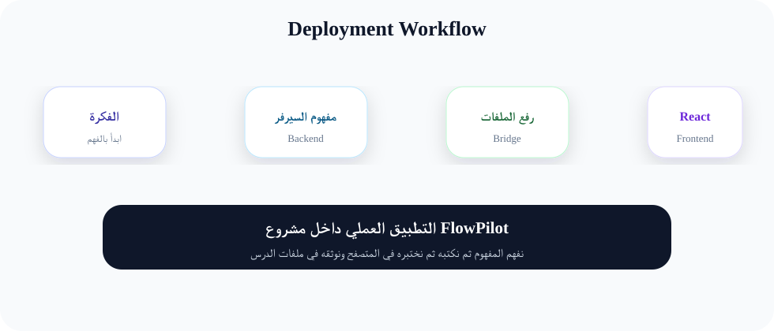

النشر (Deployment): كيف ترفع مشروعك ليراه العالم؟
"اليوم ستخرج FlowPilot من حاسوبك الشخصي إلى الفضاء السحابي الواسع."
ما هو النشر (Deployment)؟
النشر هو عملية نقل ملفات المشروع من جهازك (Local) إلى "خادم" (Server) متصل بالإنترنت على مدار الساعة. لكي يستطيع أي شخص كتابة رابط موقعك في المتصفح والدخول لـ FlowPilot.
تسلسل خطوات النشر الاحترافي
- GitHub: رفع الكود على مستودع خاص.
- Server Setup: حجز خادم (مثل DigitalOcean أو Forge).
- SSH: الدخول للخادم عبر شاشة الأوامر.
- Cloning: جلب الكود من GitHub للخادم.
- Database: تهيئة قاعدة البيانات على السيرفر.
مثال لتقريب الفكرة (افتتاح محل)
تخيل أنك صنعت بضاعة جميلة في منزلك (المشروع على جهازك).
- النشر: هو استئجار محل في شارع رئيسي (السيرفر)، ونقل البضاعة إليه، وترتيبها على الأرفف، ثم تعليق لافتة كبيرة باسم المحل (الرابط/الدومين) ليدخل الزبائن!
مخططات توضيحية

مخطط النشر
التطبيق العملي
الخطوة 1: تهيئة SSH Key
لكي يتحدث السيرفر مع GitHub، نحتاج لإنشاء "هوية إلكترونية" آمنة.